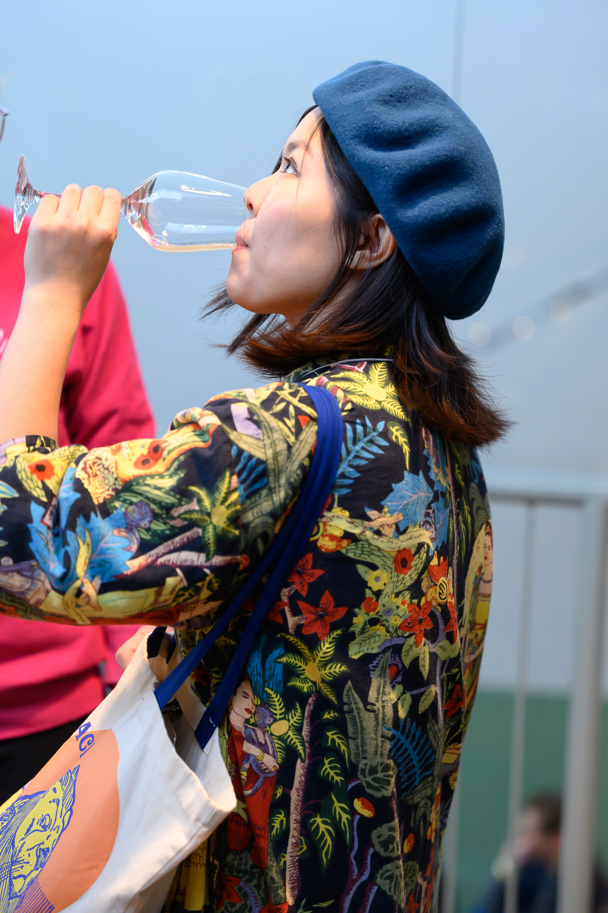
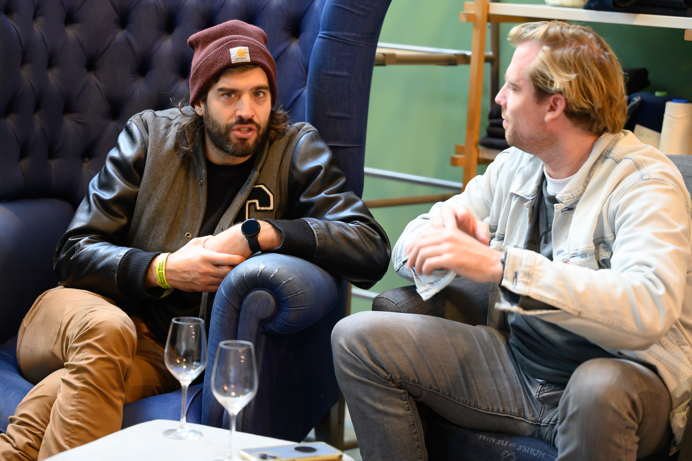

natural
wine festival
united by wine
De Hallen, Amsterdam — 23 November 2025

Verzy, Champagne. Third generation. Spontaneous fermentation, native yeasts, unfiltered.


A guided tasting for beginners. Six wines, six stories. No jargon, no pretension.



ticket sales have started
all day oysters and paired wines
salut.
We are pleased to announce that tickets are now available
Curated selection of biodynamic offerings
An unmissable oenological experience
